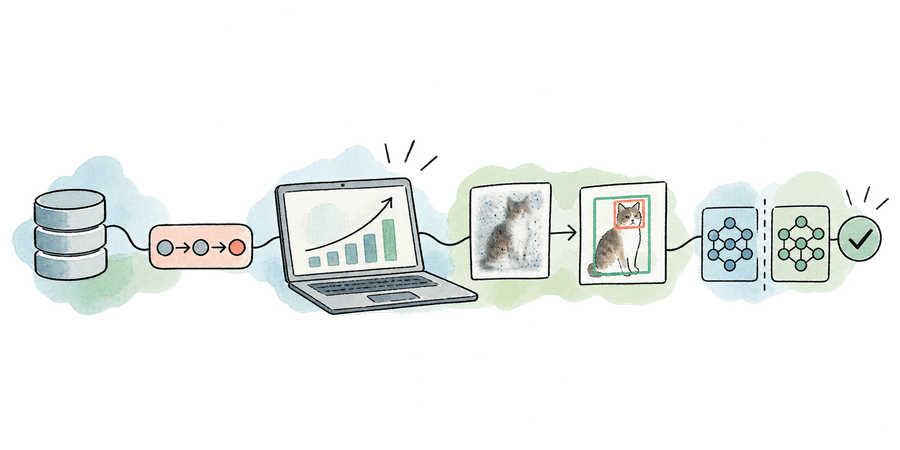

Norah Nguyen · M.Sc. Machine Learning & Optimisation
ML & analytics engineer for robust, measurable systems
Three years of production analytics at FPT Software and Ubisoft; now an Erasmus Mundus master's student doing robustness research in machine learning.
- Six-month EU internship · February 2027
- Enrolled at UTC Compiègne, France, through August 2027
- French convention de stage can be arranged
- 3 years · analytics engineering
- 2 publications · accepted / under review
About
Norah Nguyen
Full name Nguyen Thi Thanh Nhan (on papers: Nguyen, T. T. N.) · in Compiègne, France · from Da Nang, Vietnam
Second-year Erasmus Mundus master's student in Advanced Machine Learning and Optimisation of Systems, moving between UPC Barcelona (EEBE) and UTC Compiègne. Looking for a six-month internship in AI, optimisation or data, starting February 2027, anywhere in the EU.
I like work where the deadline and the evidence both matter. For three years I built data systems for demanding clients and teams, including optimised SQL and data models for a US$43B alternative-investments fund and game analytics for a platform with 30M monthly players. Alongside that I wrote a paper, accepted at SmartAgri & SuSY 2026, on when deep imputation models aren't worth their complexity, and spent a summer in Taiwan making a frozen object detector much more robust without touching its weights.
Background & mobility
Background & mobility
| City | Country | Dates | Role |
|---|---|---|---|
| Đà Nẵng | Vietnam | 2019 – 2025 | Home; degree & first career |
| Cluj-Napoca | Romania | Feb – Jul 2022 | Erasmus+ exchange |
| Barcelona | Spain | Aug 2025 – Feb 2026 | Master's, sem. 1 (UPC EEBE) |
| Tirana | Albania | Mar – Jun 2026 | Master's, sem. 2 · Polytechnic Univ. of Tirana |
| Chiayi | Taiwan | Jun – Aug 2026 | Research internship (NSTC) |
| Compiègne | France | Sep 2026 – now | Master's, sem. 3 (UTC / EMSSE) |
Experience
Three years of systems that had to ship — and be right.
From data pipelines to executive reporting, I built analytics systems for demanding teams and global clients.
Senior Analytics Engineer
US$43B AUM fund · 5 GB/day Databricks
Senior Analytics Engineer
- US$43B AUM fund optimised SQL and data models
- Days → real time reporting latency · Power BI at national and regional scale
- 5 GB/day Databricks standardisation pipeline
- Global clients across US, EU & APAC
Full role detail
FPT Software · Vietnam · delivering to US, EU & APAC clients
- Led analytics engineering across financial services, transportation, and fintech; designed end-to-end pipelines from SQL extraction to executive Power BI reporting.
- Built a Databricks pipeline applying regex-based device-name standardisation across 5 GB of daily incremental data, guaranteeing data integrity from bronze to gold layer.
- Reduced reporting latency from days to real time by automating manual processes and delivering interactive Power BI dashboards with complex DAX calculations at national and regional scale.
- Engineered optimised SQL queries and streamlined data models for a US$43B AUM alternative-investments fund.
- Researched and evaluated RAG-based NL-to-SQL solutions for non-technical stakeholders.
Selected engagements
- Santander US
- US commercial banking arm of a global bank — Boston
- Kayne Anderson
- US$43B AUM alternative-investments fund — Los Angeles
- Bolttech
- APAC insurtech operator — TW · HK · JP markets
- Viaplus
- European mobility & tolling operator (Vinci Group, Fortune 500)
Junior Analytics Engineer
Automated board-level fund reporting in SQL + Power BI
Junior Analytics Engineer
FPT Software · Vietnam
- Modernised board-level fund reporting by migrating full-suite manual Excel reports (NAV, cash flow, portfolio performance) into automated SQL + Power BI solutions with Row-Level Security.
- Designed SSRS reports and an Azure billing pipeline tracking cloud spend across all services, presenting monthly and yearly cost breakdowns in Power BI for the Chief of Data.
Data Analyst Intern
30M+ monthly active users across 13 games · Tableau, BigQuery + Firebase
Data Analyst Intern
Ubisoft · Vietnam
- Delivered game analytics across two live projects — including a nano-games platform with 30M+ monthly active users across 13 games — via interactive Tableau and Tableau Server reports.
- Built end-to-end BigQuery + Firebase pipelines to track player behaviour and game performance across production environments.
- Designed entity-relationship models and tracking documentation, collaborating with developers, QA, game designers, and economy designers across implementation and production.
Research
Making models robust — and knowing when deep isn't worth it.
A training-free method that makes a frozen object detector more robust on corrupted images, and two papers: one accepted, one under review.
Robust open-vocabulary object detection on corrupted images
Robust open-vocabulary object detection on corrupted images
Training-free test-time augmentation + Weighted Boxes Fusion on frozen Grounding DINO. No weight, gradient, or prompt changes.
- Holm–Bonferroni screen → confirm protocol
- bit-for-bit correctness gates
- PASCAL-C
- +7.16
- COCO-C
- +6.24
- FoggyCityscapes
- +5.42
National Chung Cheng University (CCU) · Chiayi, Taiwan
Research Intern · Jun – Aug 2026 · Funded by NSTC Taiwan — International Internship Pilot Program (IIPP)
- Developed a training-free test-time-augmentation + Weighted Boxes Fusion method for robust open-vocabulary detection on a frozen Grounding DINO — no weights, gradients, or prompt changes.
- Held to a pre-registered screen → confirm protocol under family-wise error control (Holm–Bonferroni), with bit-for-bit correctness gates against stock HuggingFace Transformers.

Deep Imputation Does Not Pay Off on Agricultural IoT Networks: A Rate-Swept Benchmark
Deep Imputation Does Not Pay Off on Agricultural IoT Networks: A Rate-Swept Benchmark
On when deep imputation models aren't worth their complexity, benchmarked on agricultural IoT networks.
First author · affiliation: EMSSE, Université de Technologie de Compiègne
Investigating the Influence of Prompt and Response Languages on LLM Content Generation
Investigating the Influence of Prompt and Response Languages on LLM Content Generation
How the language of the prompt and the language of the response influence what LLMs generate.
* equal contribution
Co-first author · arXiv:2608.26186
Education
Valedictorian in Da Nang, now an Erasmus Mundus master's.
Erasmus Mundus M.Sc. in Advanced Machine Learning & Optimisation of Systems
Erasmus Mundus M.Sc. in Advanced Machine Learning & Optimisation of Systems
UPC Barcelona EEBE (sem. 1) → Polytechnic University of Tirana (sem. 2 mobility) → Université de Technologie de Compiègne (EMSSE, sem. 3–4)
Engineer Degree in Computer Science & Engineering
GPA 3.87 / 4.0 — Valedictorian
Erasmus+ Exchange — Business Modelling & Distributed Computing
GPA 9.0 / 10
- ML & Research
- PyTorch · HuggingFace Transformers · fastai · scikit-learn · NumPy · Pandas · CUDA
- Data Engineering
- Databricks · MS SQL Server · BigQuery · Firebase · PySpark · Airflow
- Visualisation / BI
- Power BI · Tableau · SSRS · DAX · Power Query
- Cloud & Tools
- Microsoft Azure · Google Cloud Platform · Git · Docker · tmux · uv · LaTeX
- Research Areas
- Open-Vocabulary Detection · Test-Time Augmentation · Robustness · LLM Evaluation · Optimisation · Reproducible Experimentation
- Programming
- Python · SQL
- Languages
- Vietnamese — native English — professional · IELTS 7.5 French — currently studying · in-country
Contact
Request a tailored CV
CV, three tailored versions — request whichever fits the role, and I'll send that day.